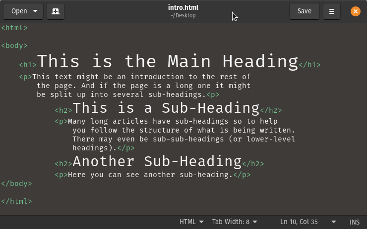
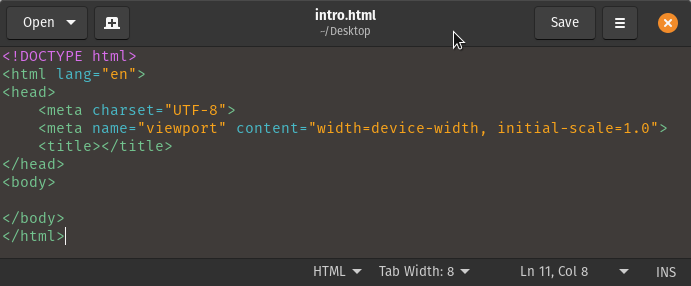
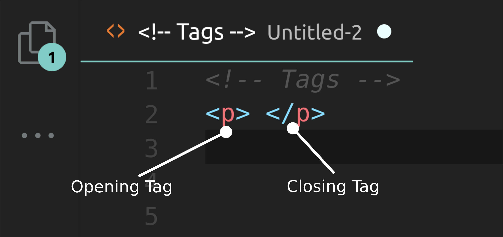
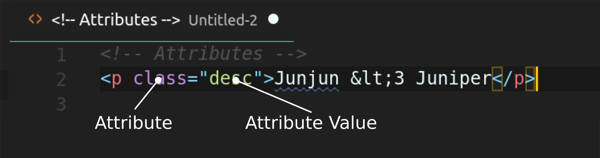
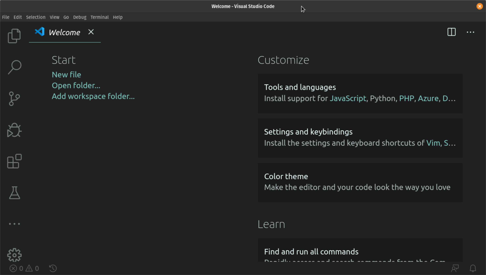

HTML
Creating Web Pages
 mjsolidarios@wvsu.edu.ph |
https://github.com/mjsolidarios
mjsolidarios@wvsu.edu.ph |
https://github.com/mjsolidarios
Use the navigation buttons or the arrow keys to proceed to the remaining slides.
F
You can also press > >F < < on your keyboard to show your presentation in fullscreen mode.
This presentation is best explored with up-to-date web browsers.
What is HTML?
HTML is not a programming language; it is a markup language that defines the structure of your content.
Typical HTML Structure
Via VSCode (Emmet)
Tags
Attributes
Attributes provide additional information about the contents of an element. They appear on the opening tag of the element and are made up of two parts: a name and a value, separated by an equals sign.
Attributes can very specific to an HTML element or can be available to most elements like "id, class...etc".
Key Concepts
Remember...
- HTML pages are text documents.
- HTML uses tags (characters that sit inside angled brackets) to give the information they surround special meaning.
- Tags are often referred to as elements.
- Tags usually come in pairs. The opening tag denotes the start of a piece of content; the closing tag denotes the end.
- Opening tags can carry attributes, which tell us more about the content of that element.
- Attributes require a name and a value.
The Editor
Thank you!